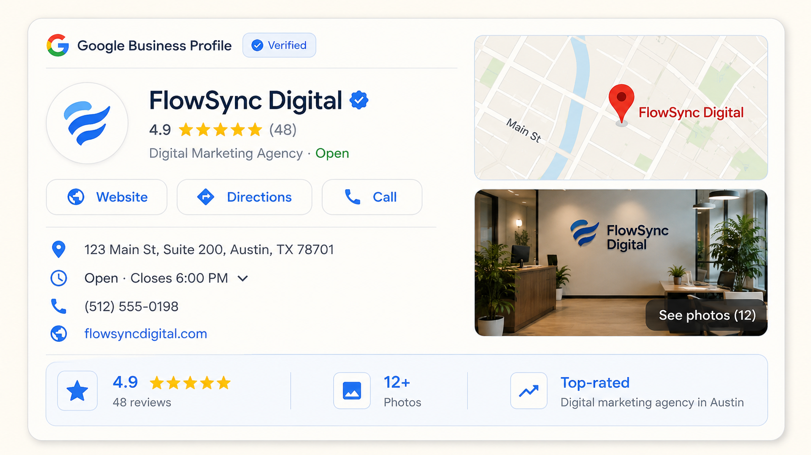
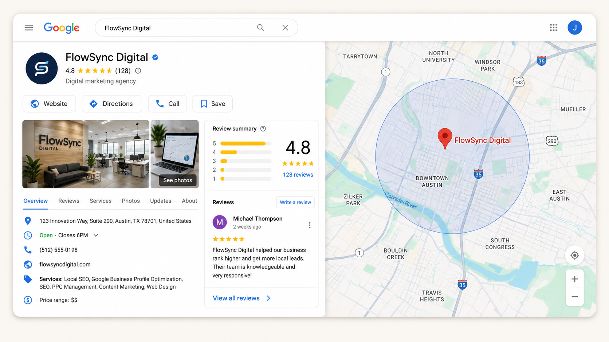
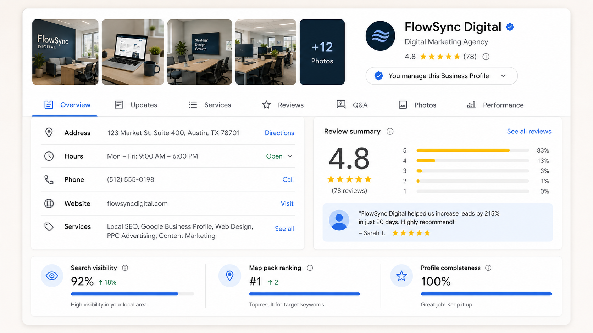
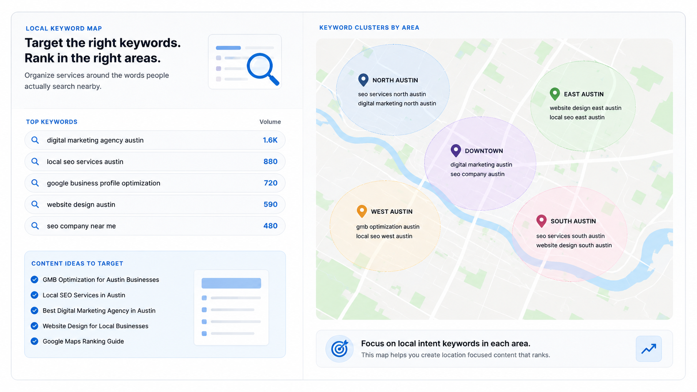
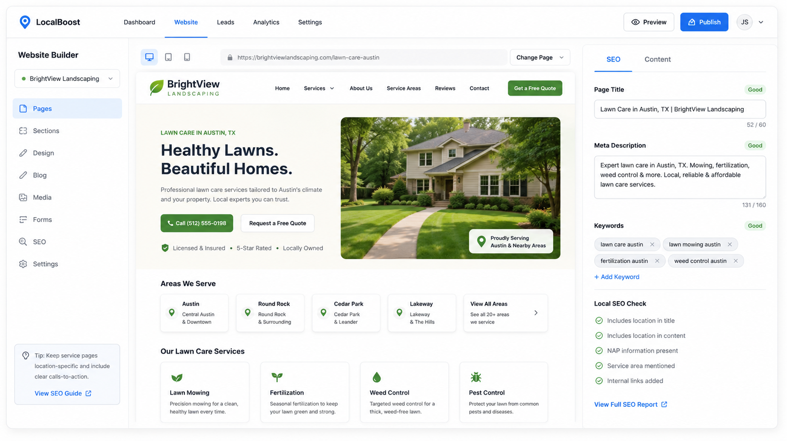
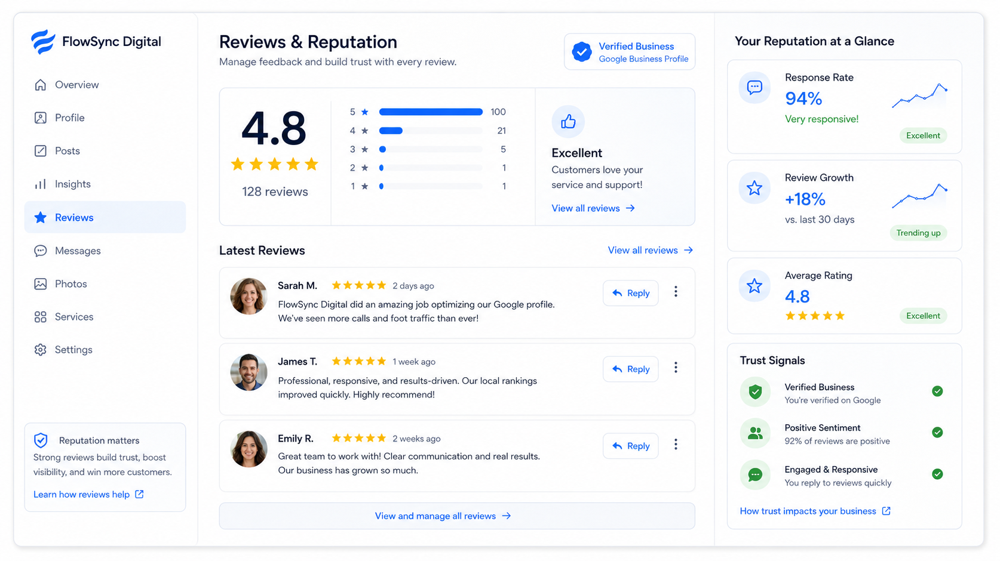
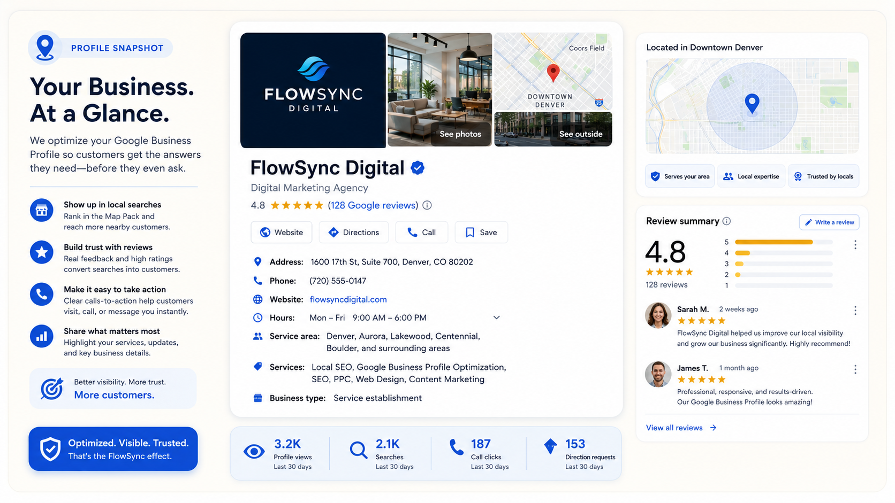
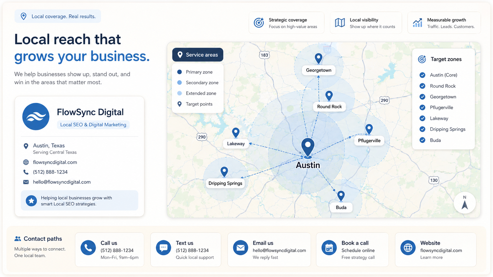
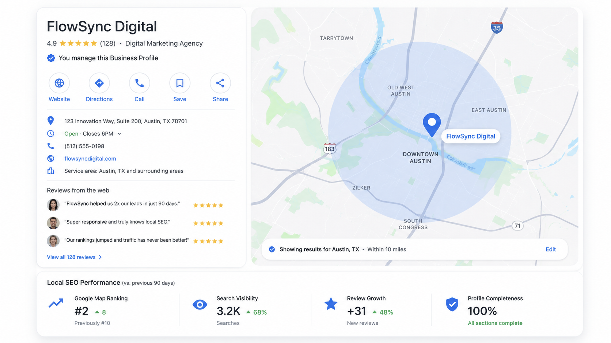

Google Business Profile
Clean categories, services, description, photos, and core details.
GMB Optimization Service
A focused Google Business Profile and local SEO setup for local businesses that want better map visibility, cleaner business information, stronger trust signals, and more people taking action.

Website, phone, directions, reviews, and service area signals.

Why It Matters
Most visitors will not study your whole website first. They check your name, reviews, location, service, photos, and website link. GMB optimization helps those signals become clearer and more trustworthy across Google Maps and local search.
What I Fix
The focus is the foundation: Google Business Profile, service pages, local keywords, listings, reviews, and useful updates people can actually understand.

Clean categories, services, description, photos, and core details.

Organize services around the words people actually search nearby.

Improve page titles, content structure, local signals, and CTAs.

Plan review links, testimonials, trust blocks, and proof sections.
Profile Snapshot
A clean profile helps people quickly understand what you do, where you work, how to contact you, and why they should trust you.


Service Area Plan
If your business serves different areas or offers several services, the page structure should help search engines and customers connect the right service with the right place.
Help search engines understand the business, services, and area.
Use reviews, photos, details, and proof to reduce doubt.
Make the path to call, visit, book, or request a quote easy.
Before
After
Search Proof
This section can show a map ranking screenshot, profile improvement preview, review growth, or search visibility report. It gives the page one more strong visual proof area without making the page too crowded.

Process
Check the profile, website, listings, reviews, and current search appearance.
Define services, target area, keywords, and what customers need to see first.
Improve profile details, page structure, content, photos, and trust signals.
Review what changed and plan the next updates without overcomplicating it.
Pricing Preview
Short version only. Open the full pricing page for the complete package details, notes, and payment direction.
From $49
Best for finding what is missing first.
View DetailsFrom $199/ month
Best for ongoing local updates, tracking, and improvement.
View DetailsCustom
Best when the business needs profile, site, and local fixes.
View DetailsSchedule / Chat
Send your business name, website link, and target area. I can check the basics and tell you what should be fixed first.